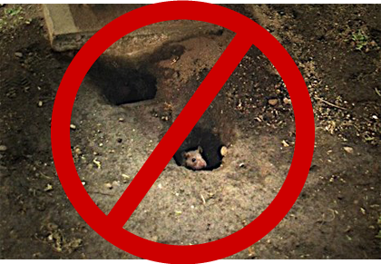
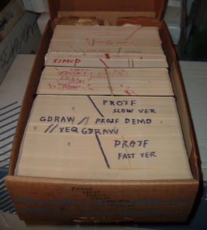

Post-Agile QA
The New Testmentality
Created by Dusty Pearce || @dustyp
Quality
Intended Function
Error Handling/Exceptions
Durablity
Performance
Security
Quality is a cultural issue.
Narrow Focus
- Time boxed presentation
- "But what about ...?"
- More where that came from
To Test or Not To Test?
Does testing feel like it slows you down?
Testing is part of "Done"
If you don't have time to do it right, then how will you find time to do it over?

How much is enough?
Go No-Go?
Product Owner decision based on input from the whole team.
QA vs QC
Brave new world where QA Specialists are elevated and moved upstream.
You are not inspector 12.
Moving upstream
- Review & refine acceptance criteria with PO
- Outline test sub-tasks at Sprint planning
- Create test checklists for common patterns
Teamwork
- Best tester on the team
- Team mentor for exploratory testing
- Updating test tasks
- Automated and unit test review
Review
- Metrics and Measurement
- Process enforcement
- Organizational thought leadership
Automated Testing
It's code.
Who writes code?
Developers do.
Where there is code there is...

Encapsulate and Organize
You should be automating all your tests, so you need a plan.
The good, the bad and the ugly
- When a test fails, the system is broken. Respond accordingly.
@Test
public void testMainControllerModelTestFactoryTest() {
Junit.assert(true);
//Service service;
//Parent parent = new Parent();
//Child child = new Child();
//parent.addChild(child)
...
}
Continuous Integration
- Frequent commits
- Triggered and nightly builds
- Scale with parallel testing (Isolation!)
- Who broke the build?
What about Manual Testing?
- Exploratory testing for new features
- Can't be automated then keep desc with code base
- Label so you know what to regress for a given change
- Experience, Explore then Automate
Works in Mobile Safari
Try it out! You can swipe through the slides and pinch your way to the overview.
Marvelous Unordered List
- No order here
- Or here
- Or here
- Or here
Fantastic Ordered List
- One is smaller than...
- Two is smaller than...
- Three!
Transition Styles
You can select from different transitions, like:
Cube -
Page -
Concave -
Zoom -
Linear -
None -
Default
Themes
Reveal.js comes with a few themes built in:
Sky -
Beige -
Simple -
Serif -
Night -
Default
* Theme demos are loaded after the presentation which leads to flicker. In production you should load your theme in the <head> using a <link>.
Global State
Set data-state="something" on a slide and "something"
will be added as a class to the document element when the slide is open. This lets you
apply broader style changes, like switching the background.
"blackout"
"soothe"
Custom Events
Additionally custom events can be triggered on a per slide basis by binding to the data-state name.
Reveal.addEventListener( 'customevent', function() {
console.log( '"customevent" has fired' );
} );
Clever Quotes
These guys come in two forms, inline:
The nice thing about standards is that there are so many to choose from
and block:
For years there has been a theory that millions of monkeys typing at random on millions of typewriters would reproduce the entire works of Shakespeare. The Internet has proven this theory to be untrue.
Pretty Code
function linkify( selector ) {
if( supports3DTransforms ) {
var nodes = document.querySelectorAll( selector );
for( var i = 0, len = nodes.length; i < len; i++ ) {
var node = nodes[i];
if( !node.className ) ) {
node.className += ' roll';
}
};
}
}
Courtesy of highlight.js.
Intergalactic Interconnections
You can link between slides internally, like this.
Fragmented Views
Hit the next arrow...
... to step through ...
any type- of view
- fragments
Fragment Styles
There's a few styles of fragments, like:
grow
shrink
roll-in
fade-out
highlight-red
highlight-green
highlight-blue
Spectacular image!

Export to PDF
Presentations can be exported to PDF, below is an example that's been uploaded to SlideShare.
Take a Moment
Press b or period on your keyboard to enter the 'paused' mode. This mode is helpful when you want to take disctracting slides off the screen during a presentation.
Stellar Links
It's free
reveal.js and rvl.io are entirely free but if you'd like to support the projects you can donate below. Donations will go towards hosting and domain costs.